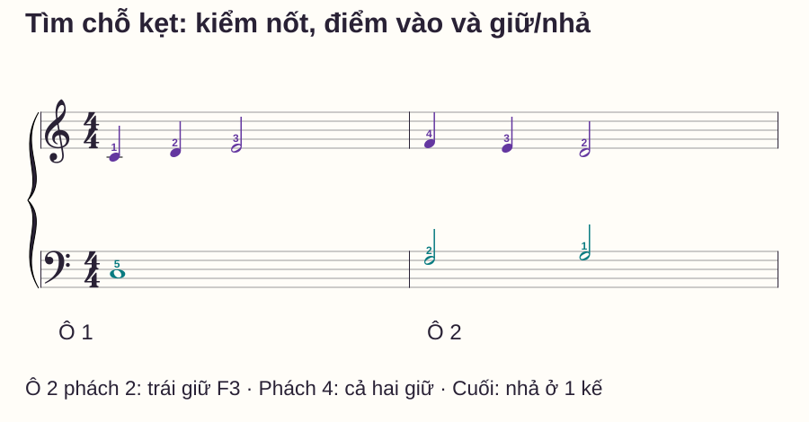
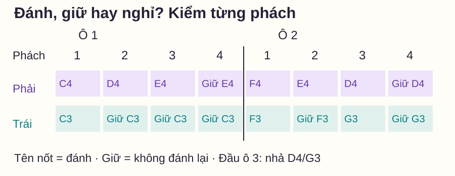

Luyện tập hiệu quả
Từng tay chơi được nhưng không ghép được: tìm chỗ kẹt
# Từng tay chơi được nhưng không ghép được: tìm chỗ kẹt
Bạn tập riêng hai phần đều được, nhưng cứ ghép là dừng. “Rối tay” mô tả cảm giác, chưa chỉ ra việc cần sửa. Có người sai ngay tên nốt, có người nhả nốt dài sớm, có người chỉ vấp khi đi qua vạch ô nhịp. Cùng một lời khuyên tập chậm chưa đủ phân biệt các tình huống ấy.
Bài này dùng một mẫu ngắn và bốn phép thử để thu hẹp chỗ kẹt. Bạn ghi lại hành động cụ thể, chọn một cách sửa rồi quay về đúng mẫu ban đầu. Đây là phần đầu loạt Luyện tập và sửa lỗi; phần tiếp theo hướng dẫn chia đoạn và nối lại câu.
Trả lời nhanh
Khi từng tay chơi được nhưng không ghép được, hãy kiểm từng tay tại cùng tempo ghép, rồi ghi đúng phách và hành động bị sai. Sau đó thử tách các nhiệm vụ: gọi tên nốt chưa đàn, gõ điểm bắt đầu, giữ tiết tấu nhưng giảm số phím, hoặc chơi qua ranh giới hai ô. Mỗi phép thử chỉ gợi ý phần đang gây khó, không chứng minh một nguyên nhân duy nhất. Chọn một đoạn ngắn để sửa theo bằng chứng, rồi trở lại mẫu đầy đủ ở cùng tempo. Nếu chỉ làm được phiên bản rút gọn, bạn vẫn cần bước nối lại trước khi coi chỗ đó đã ổn.
“Được riêng” cần được kiểm ở điều kiện nào?
Chơi tay phải rất nhanh trong khi tay trái chỉ được ở tốc độ chậm chưa tạo một phép so sánh chung. Chọn tempo đủ để cả hai làm đúng đoạn cần ghép, rồi kiểm cả thời điểm nhả. Nhớ tên nốt hoặc thuộc động tác không tự cho biết hai phần sẽ diễn ra cùng nhau thế nào.
Yamaha — 12 Practice Tips phân biệt tập riêng như công cụ với việc mặc định học mọi phần tách rời. Bài này chuyển nguyên tắc đó thành một bảng thử cụ thể; không gán các ngưỡng luyện bên dưới cho nghiên cứu hay tiêu chuẩn thi.
Bài tập đối chiếu hai ô nhịp
C = Đô, D Rê, E Mi, F Fa, G Sol. C4 là Đô giữa; C3 thấp hơn một quãng tám. Ngón 1 cái, 2 trỏ, 3 giữa, 4 áp út, 5 út. Tay phải trong C4–G4, trái trong C3–G3. Không dùng pedal để thấy rõ giữ và nhả.

| Tay | Ô 1 | Ô 2 |
|---|---|---|
| Phải | C4 đen (1), D4 đen (2), E4 trắng (3) | F4 đen (4), E4 đen (3), D4 trắng (2) |
| Trái | C3 tròn (5) | F3 trắng (2), G3 trắng (1) |
Đếm 1–2–3–4 mỗi ô. Phải đánh ở 1, 2, 3 rồi giữ nốt cuối qua 4. Trái ô 1 đánh ở 1 và giữ qua 2–3–4; ô 2 đánh ở 1 và 3. Nhả các nốt cuối D4/G3 khi tới số 1 tưởng tượng của ô 3.
Có thể thử 50 phách/phút, một click mỗi phách, với một ô đếm chuẩn bị. Nếu chưa tìm kịp nốt, đọc và tìm phím trước rồi giảm tempo hoặc chỉ dùng một ô. Không kéo dài riêng một phách để chờ tay rồi coi lượt ấy đã đều.
Bốn phép thử: mỗi lần thay một nhiệm vụ
1. Gọi tên trước khi đặt tay
Chỉ từng đầu nốt và nói tên cùng quãng tám, sau đó nói thời điểm bắt đầu. Nếu bạn chưa xác định được F3 ở đầu ô 2, hãy sửa phần đọc/nối phím đó trước. Tập riêng một lần tại đúng tempo đang dùng để kiểm lại nhận xét “tay này đã được”.
2. Gõ điểm vào, chưa thêm cao độ
Gõ đúng các điểm bắt đầu của hai tay: ô 1 cả hai ở 1, chỉ phải ở 2/3; ô 2 cả hai ở 1/3, chỉ phải ở 2. Phách 4 không tay nào tạo tiếng mới. Giữ đếm liên tục, hai lượt là đủ để ghi lại chỗ lệch. Gõ bàn không mô phỏng âm ngân, nên chưa xác nhận giữ/nhả.
3. Giữ tiết tấu nhưng giảm còn một phím mỗi tay
Phải chỉ dùng C4 ngón 1, trái chỉ dùng C3 ngón 5; giữ đúng điểm đánh và độ dài như mẫu. C4 phải ở phách 1 và 2 là hai lần đánh: nhả đủ để phím trở lên rồi đánh lại đúng thời điểm. Nếu bản này ổn mà bản đầy đủ không ổn, việc thêm cao độ/chuyển ngón có thể đang làm nhiệm vụ khó hơn; chưa đủ để kết luận ngón nào “yếu”.
4. Kiểm riêng đường qua vạch ô nhịp
Thử ô 1 phách 3–4 → ô 2 phách 1–2. Để bắt đầu đoạn này, trước lượt đếm hãy đặt C3 trái xuống nhẹ và giữ; tới phách 3 mới đánh E4 phải. Đây là cách dựng lại trạng thái giữ của nốt đã bắt đầu trước đoạn cắt, không phải cách biểu diễn câu đầy đủ. Đi tiếp qua F4/F3 ở 1 rồi E4/giữ F3 ở 2. Sau đó trở về hai ô từ đầu.
Lưới để phân biệt không đánh mới với nghỉ

Từ kết quả thử tới một bài sửa
| Quan sát | Việc thử sửa | Phép quay về |
|---|---|---|
| Gọi sai nốt hoặc vùng phím ngay khi chưa ghép | Chỉ ba nốt quanh chỗ sai, gọi tên rồi tìm đúng phím | Chơi riêng đoạn đó tại tempo chung, rồi ghép lại |
| Gõ hai tay cũng lệch điểm vào | Nói hành động chung từng phách, gõ riêng hai phách | Đàn một phím mỗi tay rồi trở lại mẫu đầy đủ |
| Đúng điểm vào nhưng nhả C3 ở phách 2 | Chơi C3 giữ và một lần đổi phải C4→D4 | Kiểm giữ qua 2, rồi thêm E4 và cả ô |
| Từng ô được nhưng nối thì dừng | Tập 3–4–1–2 với trạng thái giữ được dựng rõ | Nối đủ hai ô, không thêm khoảng chờ |
Các kết quả có thể chồng nhau. Nếu hai phép đều thất bại, chọn nhiệm vụ nhỏ nhất còn chưa rõ; đừng thay tempo, ngón, nốt và đoạn cùng lúc rồi không biết yếu tố nào giúp.
Những lỗi làm phép thử mất giá trị
Đổi cả tốc độ lẫn số nốt. Lượt rút gọn nhanh hơn hoặc chậm hơn nhiều khó đối chiếu với lượt gốc. Giữ cùng tempo trong một lần so sánh nếu có thể; nếu phải giảm, ghi lại và kiểm cả hai phiên bản tại mức mới.
Chỉ chạy lại từ đầu. Bạn có thể đang luyện phần đã biết nhiều hơn chỗ bị kẹt. Ghi “ô 2, phách 3: trái chưa sang G3” để chọn đúng đoạn.
Gõ được rồi bỏ bước đàn lại. Lỗi giữ/nhả và tìm phím có thể chỉ xuất hiện trên đàn. Phải quay lại mẫu có cao độ trước khi kết luận đã sửa.
Cố chứng minh mình đã làm được. Một lượt tình cờ đúng chưa cho thấy chỗ vào đã rõ. Nghỉ đặt lại, thử trực tiếp ô 2 rồi kiểm cả câu.
Routine mười phút và phép tự kiểm
- 0–2 phút: thử hai ô ở tempo phù hợp, ghi đúng một lỗi có vị trí.
- 2–4 phút: chọn một phép thử trong bốn phép trên, không chạy cả bảng cho đủ.
- 4–6 phút: làm bài sửa tương ứng, tối đa ba lượt có đặt lại.
- 6–8 phút: phục hồi mẫu đầy đủ và nối phách trước/sau.
- 8–10 phút: nghỉ ngắn, thử trực tiếp ô 2 rồi thử cả câu; ghi điều còn sai.
Tự hỏi: ở ô 2 phách 2, trái làm gì? Khi bắt đầu đoạn từ ô 1 phách 3, C3 trái đã ở trạng thái nào? Nếu trả lời được nhưng đàn chưa đúng, giảm nhiệm vụ thực hiện; nếu chưa trả lời được, xem lưới trước.
Mở đáp án và tiêu chí kiểm
Ô 2 phách 2: trái giữ F3 từ phách 1. Ô 1 phách 3: trái đang giữ C3 đã bắt đầu ở phách 1. Tiêu chí của mẫu: đúng nốt/vùng, điểm vào, độ dài và đi qua vạch nhịp không dừng; giữ D4/G3 cuối đến số 1 ô tiếp. Hãy thử lại sau đặt lại, không chỉ thuộc lời giải.
Đọc tiếp trong loạt bài
Chia đoạn và nối chồng giúp đưa một chỗ sửa trở lại câu. Nếu chưa rõ khi nào nên tách, xem tập từng tay. Nếu lỗi là nốt đen/nốt trắng kéo nhau, dùng hai tay 2:1 có hai mẫu đổi vai.
Câu hỏi thường gặp
Có phải ghép không được là tay trái yếu không?
Chưa đủ bằng chứng. Đọc sai nốt, vào sai phách, nhả sớm và tìm phím chậm có thể đều tạo cảm giác rối. Hãy thử từng nhiệm vụ cụ thể trước.
Tôi có cần bỏ máy đếm nhịp không?
Có thể đọc và tìm vị trí khi chưa bật máy. Ở lượt kiểm thời gian, dùng phách tham chiếu phù hợp; máy không thay việc biết tay nào cần làm gì.
Có nên tập riêng thêm thật nhiều lượt không?
Chỉ khi còn lỗi riêng cần sửa. Nếu riêng đã rõ mà ghép mới sai, hãy luyện quan hệ giữa hai tay ở một đoạn nhỏ thay vì thêm lượt không có mục tiêu.
Chơi một phím mỗi tay có làm tôi học sai bài không?
Đó là phiên bản thử có chủ ý, không thay bản nhạc. Ghi rõ tiết tấu được giữ, cao độ được giảm, rồi phục hồi mẫu đầy đủ sau khi kiểm.
Tôi có được dừng ở lượt tìm lỗi không?
Có. Lượt tìm hiểu có thể dừng. Lượt kiểm giữ nhịp cần đi liên tục trong đoạn đã chọn; hãy phân biệt mục tiêu hai lượt.
Khi nào chuyển sang câu khác?
Khi lỗi đã ghi không còn xuất hiện ở mẫu đầy đủ, bạn vào được từ ô 2 và chơi cả câu sau đặt lại tại tempo kiểm soát được. Đây là tiêu chí thực hành của mẫu, không phải bảo đảm mọi bài đều hết lỗi.
Nguồn và ghi chú biên soạn
Yamaha — 12 Practice Tips, Stephen Pierce, được đối chiếu ngày 27/10/2026 cho vai trò tập riêng và đưa đoạn sửa lại ngữ cảnh. Sheet, bảng thử, routine và tiêu chí do website biên soạn; chưa có thử nghiệm học viên hoặc review giáo viên độc lập.